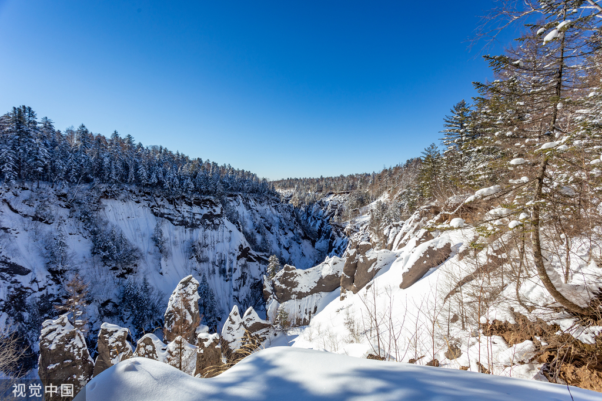
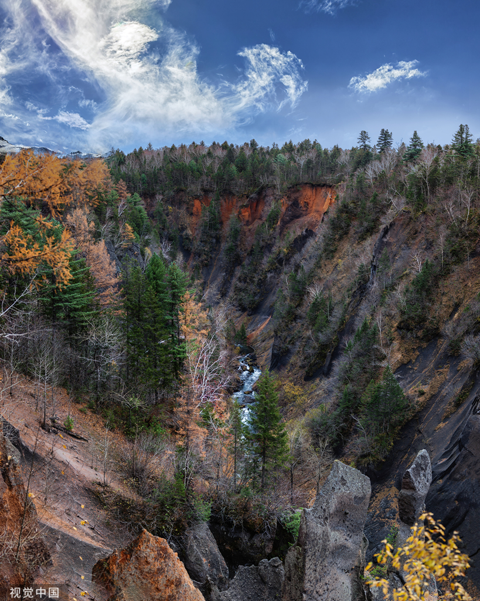
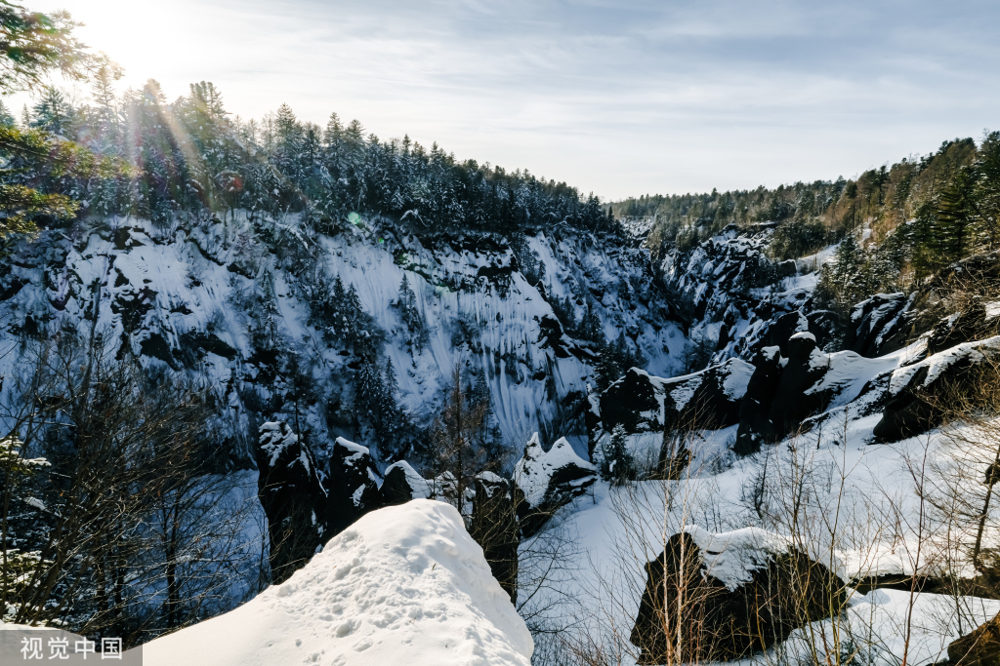
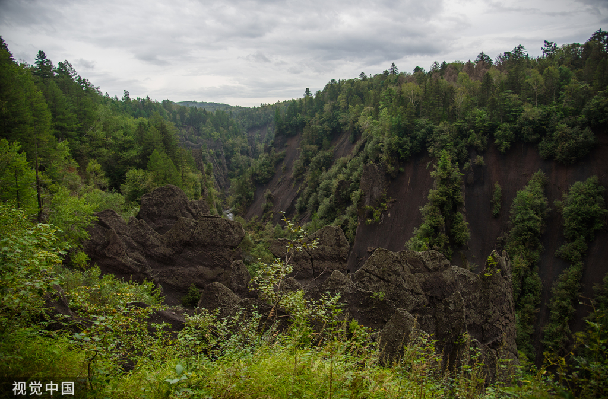

锦江大峡谷
火山撕裂、时光精雕的深邃刻痕

锦江大峡谷，是长白山大地上一道被火山撕裂、又经时光精雕细琢的深邃刻痕。它并非流水或冰川的寻常作品，而是一场距今约1000年前的火山千年大喷发后，大地自我愈合时留下的、至今仍在生长的地质奇观。
📊 锦江大峡谷的科学数据标尺
在俯瞰其深邃前，一组数据揭示了它的宏伟尺度：
空间尺度
- 总长度：约70公里，从卫星俯瞰呈清晰的"人"字形延伸。
- 深度与宽度：最深处达100-160米，平均深度约80米；宽度在200至300米之间，最窄处仅数米。
- 谷坡角度：异常陡峭，坡度达70-80度，部分区域近乎垂直。
游览参数
- 游览段：常规游览的是北锦江峡谷的一段，沿森林栈道进行。
- 栈道长度：步行栈道全长约1.8公里，形成一个环形游览线路。
- 建议时长：完整游览及拍照约需1-2小时。
🌋 成因叙事：火山、断裂与流水的三重奏
这条峡谷的诞生，始于一场星球级的呼吸。约一千年前，长白山千年大喷发堆积了巨厚的火山碎屑物。随后，大地在构造应力下断裂，形成初始裂隙。地表水（锦江）沿着这些脆弱带下切，持续的流水侵蚀与寒冻风化作用，如同不知疲倦的雕刻师，最终将裂缝拓展成今天这道令人望而生畏的巨型V形峡谷。最关键的是，这个过程至今仍在继续，峡谷仍在缓慢地变化与扩大之中。
🏞️ 景观层次：一座露天的天然雕塑馆
穿行于峡谷边缘的森林栈道，你将领略一场视觉盛宴：
- 微观奇观：谷中遍布由火山岩经风化而成的"冰缘岩柱"和"溶岩林"，造型千姿百态，被赋予了"恐龙石"、"双熊登山"、"犀牛望月"、"双象吸水"等生动名字。
- 色彩交响：峡谷岩壁并非单调，而是呈现出砖红、银灰、灰黑等多层色调，斑斓而凝重。
- 生命共生：峡谷两岸，茂密的原始森林与嶙峋的岩壁相依。在这里，你能看到著名的"松桦恋"景观——松树与桦树根系相连、相依共生，被誉为爱情的信物。
🔬 生态与人文：科学与传说的交汇
- 生态孤岛：峡谷内低温潮湿，树干上挂满苔藓与"白丝"（松萝），完好保存了原始生态面貌，是研究高山森林生态的绝佳样本。
- 文化映照：峡谷原名"紧江"，意为水流湍急，后雅化为"锦江"，寄托了人们对锦绣山河的想象。其壮丽景致被誉为"中国的熔岩盆景"和"中国的科罗拉多"。
✨ 游览提示：安全与敬畏并存
- 游览安全：峡谷陡峭深邃，务必全程在木质栈道上游览，切勿攀爬或试图下到谷底，极其危险。
- 最佳视角：部分观景台是俯瞰峡谷全貌、欣赏其"V"形断面和"人"字形宏观布局的最佳地点。
- 出行准备：山区气候多变，栈道可能湿滑，需穿着防滑的徒步鞋并备好防风外套。林间小动物（如花栗鼠）常见，请勿喂食。
- 静心观想：不妨放缓脚步，对照那些奇石的名字，发挥自己的想象，体会自然鬼斧神工的创造力。



